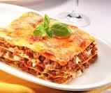
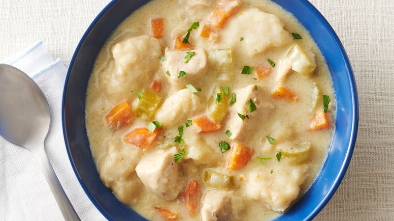
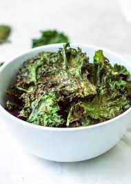

 Lasagna is a wide, flat sheet of pasta. Lasagna can refer to either the type of noodle or to the typical lasagna dish which is a dish made with several layers of lasagna sheets with sauce and other ingredients, such as meats and cheese, in between the lasagna noodles.
 Instant Pot Chicken and Dumplings is full of tender chicken and vegetables with easy homemade dumplings. One of the best Instant Pot dinner recipes!
 These crispy oven-baked kale chips are a great homemade snack. You cannot stop at just eating one, just like potato chips. Great for parties, too.